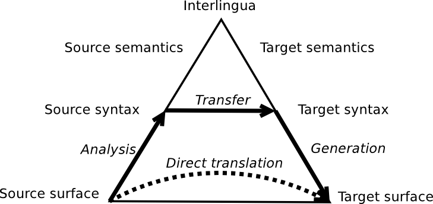

Applications of Autoencoders in Natural Language Processing
1 Autoencoders for Representation and Deep Learning
See Neural Networks
Deep Learning is a branch of machine learning that studies models which involve a large amount of composition of learned functions or concepts. [1]
Most machine learning algorithms require a large amount of human input in the form of selecting features that cluster data in the desired way. Often, designing features and representations requires an in-depth knowledge of the data and its subject, and features that may work well for one specific set of data are not guaranteed to work for a different, even similar, set. Representation learning attempts to learn good features and representations, removing this barrier. Deep learning algorithms (such as deep neural networks) then learn multiple levels of representation at different levels of abstraction. Each concept is defined in terms of simpler ones, and more abstract representations are computed from less abstract ones. This is what makes deep learning algorithms particularly powerful, especially in difficult tasks such as computer vision and natural language processing (NLP). [2]
1.1 The Autoencoder

{kind=link}
See Autoencoders
On the following pages, we will mainly discuss applications of the autoencoder (AE) in NLP. An autoencoder is a good example of a representation learning algorithm. It combines an encoder function and a decoder function, but is trained in such a way to preserve the input as much as possible, whilst making the new representation have useful properties. [3]
1.2 The Recursive Autoencoder
Many of the examples that follow make use of recursive autoencoders (RAE). Say we have a representation for words, and want to deduce from this a representation for a sentence. We first build a binary tree structure for our sentence. From this, we generate a sequence of ‘hidden’ representations. For the first step, an autoencoder attempts to reconstruct two ‘leaf’ inputs. At each further step, the autoencoder attempts to reconstruct both the input vector and the hidden vector from the previous step. This should result in a final encoding that has been built in such a way as to allow as much as possible the reconstruction of every input of the sequence. [4]
1.3 Deep Learning with Stacked Autoencoders

{kind=link}
See Stacked Autoencoders and ***Pretraining
We will demonstrate how deep networks can be built with stacked autoencoders. This is done by training individual autoencoders in turn, fine-tuning using backpropogation, then adding a final layer, such as for example a softmax layer for classification problems. [5] The method of training layers individually has been shown to lead to a considerable increase in accuracy. [6] However, it should be noted that the use of rectified linear units (ReLUs), as proposed by Glorot et al in 2011, has made this form of pre-training largely unnecessary in recent years. [7]
2 Applications in Natural Language Processing
Natural Language Processing (NLP) is a field of study which is interested in problems that involve computers understanding human language. NLP encompasses some of the oldest and most-difficult problems in computer science. In recent yeras, deep learning has allowed for promising advancements in some of these semingly intractable problems, as demonstrated below. [8] And indeed, autoencoders have been used in attempts to solve all of the following problems:
2.1 Word Embeddings

{kind=link}
In order to model a language, we need to be able to take words, sentences, and paragraphs and map them to vectors. Here, we consider the process of converting words to vectors. There are several methods for doing so.
The simplest method is arguably a one-hot representation. This is where each word is represented by a vector containing a single entry of 1 and all other entries are 0. Clearly, this is an extremely wasteful representation (we would need many thousands of dimensions for even a simple model). Furthermore, such a representation is not able to show when words have similar meanings.
A solution to this is representing a word in terms of its most common neighbours. For example the words ‘screen’ and ‘display’ are always used in similar contexts and so should end up with similar representations. We may either consider a window of n neighbouring words, where n generally ranges between 5 and 10, or consider all the words within a document. We can then reduce the dimension of vectors, usually by singular value decomposition (SVD), in order to produce a small representation (usually to the order of 100 dimensions) which encaptures much of the meaning of a word.
Currently the most popular implementations use neural networks which attempt to predict surrounding words (called the skip-gram model) paired with negative sampling. [9]
We will consider a very simple implementation, proposed by Lebret and Collobert in 2015, which uses autoencoders to jointly learn representations for words and phrases.
2.2 Machine Translation

{kind=link}
Machine translation (MT) is an incredibely difficult problem, which has been studied since the 1950s and is believed to be ‘AI-complete’ (equivalent to creating artificial general intelligence). The aim is to accurately translate text from one human language to another.
Traditional approaches included word-for-word (direct) translation. This, as you might expect, produced very poor results, due in part to significant syntactic (structural) differences between most modern languages. The solution to this was to analyse the syntax in the input language, produce a parse tree, and then perform the translation producing a new parse tree which can be used to generate the text in the output language.
Still, errors occur due to homonyms: words can take very different meanings in different contexts. The solution to this is to analyse the semantics (meaning) in the source language, and then generate the target text from this meaning. This meaning can be encoded in the form of word, sentence and paragraph vectors.
These different methods are shown by a Vauquois pyramid. In general, the greater the depth of the intermediary representation, the higher the quality of translation. [8]
We will discuss how autoencoders can be used to build bilingual word and phrase representations, as proposed by Chandar and Lauly in 2014.
2.3 Document Clustering
Document classification is the problem of assigning documents (such as a web page or news story) to categories. In particular, we will discuss unsupervised document classification (document clustering). The challenge here is to represent documents in such a way that they can be easily and accurately clustered.
Approaches generally involve producing a vector with an entry for each word, set to the number of times for which that word occurs in a given document. This vector will of course have a very high dimensionality (one dimension for each possible word), so its dimensionality will be reduced by means of, for example, principle component analysis (PCA) along with various other optimisations. [11]
In 2006, Hinton used an autoencoder to reduce the dimensionality of 804 414 vectors, each of 2000 dimensions, representing specific word probabilities in newswire stories. As can be seen by the results shown above, autoencoders significantly outperformed the standard method of latent semantic analysis, which is based on PCA, as well as a nonlinear dimensionality reduction algorithm proposed by Roweis in 2000. [10]
2.4 Sentiment Analysis
We will look at the most basic task in sentiment analysis: determining the polarity of a statement. In other words, we want to tell whether a given text is positive, neutral or negative. This kind of sentiment analysis has significant applications in business, such as for stock prediction and in product research and marketing.
Early approaches simply look for positive or negative words and predict the sentiment from this alone. For example a review containing the word “good” is likely to be positive. This approach can be implemented to be very fast, and for this reason is still used by several companies that perform sentiment analysis on large amounts of data in real time. However, such strategies can be innaccurate (most studies have found this method to be accurate for approximately 60-80% of the test data). For example, they may fail to make the correct conclusion for texts with negation. [12]
We will discuss how approaches using vector word representations and recursive autoencoders can achieve a much greater accuracy.
2.5 Paraphrase Detection
Often in English, two phrases that look very different can have exactly the same meaning. We will continue from the previous section, showing how deep learning allows for accurate detection of such phrases.